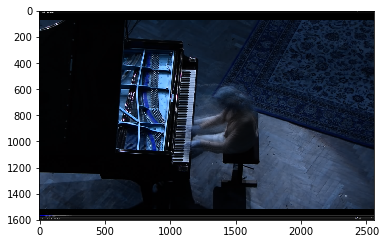
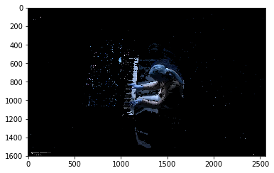
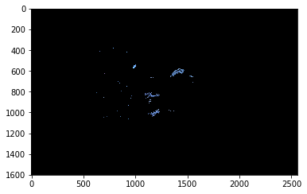
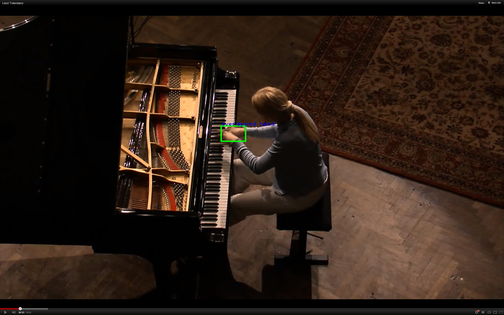

Problem Definition
There are three main parts to this assignment:
1) In the first part of the assignment we are given frames of a person playing the piano. Our task is to segment the left and right hand from each frame.
The second and third part of this assignment is to track objects in a video.
2) In the second part, we are given the frames of a video of bats flying through the sky.
We are also provided the segmentation of those bats in the image by (x,y) coordinates in a
CSV file. We need to use the Kalman Filter to track the bats through each frame.
3) Finally, the third part we are given a frames of a video of cells moving in a petri dish.
We have to provide a segmentation of the cells and use the Kalman Filter to track each cell
through the frames of the video.
For each of these sections, we have to create a visual representation of our results.
Method and Implementation
Part 1 - Segmentation of Hands
- Pre-processing
- Segmentation
- Visual representation
Firstly, we load all the image frames into a list of matrices. Then, we calculate the average pixel values for all the frames and store it as a new image. The average image is shown below:

There are two major steps in the segmentation part. First, we compute the differences between image frames and the average image to get the movement energy in each frame. By doing this, we can easily get rid of the static regions (refers to the Figure below).

As we can see, there are still lots of noise blobs and the useless body regions left. In the second place, in order to segment the hand regions, we apply the skin color detection method on the result we get (Figure below). Finally, we pick the top three largest blobs, which is the hand and head regions, since these regions are significantly larger than the noise blobs.

Bounding boxes are drawn with the labels of the hand above them (left/right/overlap hand(s)). The example shown below is a special case where two hands are overlapping.

Part 2 - Tracking Bats
- Pre-processing
- Tracking
- Prediction - Kalman Filter
- Data Association - Hungarian/Greedy Algorithm
- Visual representation
Load the frames and localization data and save them into data structures (list/panda dataframe).
After the tracing process, we get a list of sequences respecting to time, which contain the traces for the objects in the image frames. Then, we use cv2.line() to visualize the trace of each object step by step. Finally, we stored the visualized frames into a video which is provided in the Results section.
Part 3 - Tracking Cells
- Pre-processing
- Segmentation
- Tracking
- Visual representation
Same as Part 2. Here, since we only have cell images available, the segmentation method is required.
..............................................
Same as Part 2.
Same as Part 2.
functions created:
skinDetect: find the pixels with the skin color
three_largest_blobs: retrieve the top three largest blobs in the image
preprocess: load the frames and location data
visualize_track: draw the traces of objects in the frames
output_visualization: generate a video representation for the output
calculate_cost: determine the cost matrix given two sets of points
greedy: first predicted_value (object tracked for the longest time) gets highest priority so assign smallest value distance to measurement to that prediction and so on through all predictions
data_association: Formulate the 2D assignment problem and obtain a global optimal
Kalman_Filter: Predict the measurements and their covariances to estimate the validation gates. Perform tracking by updating the state of each object and its covariance from the assignment result.
Experiments
The experiment is completed in Python. Source Code can be found here:
The resources we used:
- Piano Images
- Bat Images /li>
- Bats Localization
- Cell Images
Results
The results for the three parts are shown below:
Part 1 - Segmentation of Hands
Part 2 - Tracking Bats
Part 3 - Tracking Cells
Discussion
- In part 1, we detected the positions of hand in all image frames provided, including the overlapping cases. However, it's still difficult to completely segment the hand blobs due to the variances in pixel color. Different strategies other than skin color detection might be used to gain a higher performance.
- In part 2, ...............................................
- In part 3, ...............................................
Conclusion
We successfully recognized and visualized the hand positions of the pianist in part 1. For part 2 and 3, the Kalman Filter combined with the Data Association methods works fairly well and we have segmented (part 3), tracked and visualized the traces for all the detected objects.
Credits and Bibliography
CS 585 - Lab 7 Solution - Teaching Fellow Yifu Hu
Classmates: Shijie Zhao, Jiangshan Luo